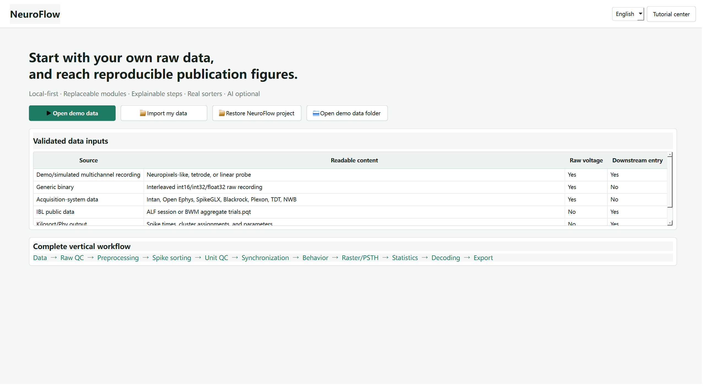

看得见
Visible
每一步显示输入、参数、方法、结果与风险，不把分析压缩成一个黑箱按钮。
Every stage exposes inputs, parameters, methods, results, and risks instead of hiding analysis behind one button.
Local-first electrophysiology workbench
将原始多通道记录、Kilosort 与可替换 sorter、行为事件、Neo/Elephant 分析、统计和论文导出组织在一个可拆解、可检查、可复现的桌面工作流中。
A local desktop workflow that connects raw multichannel recordings, Kilosort and replaceable sorters, behavior, Neo/Elephant analyses, statistics, and reproducible publication output.

每一步显示输入、参数、方法、结果与风险，不把分析压缩成一个黑箱按钮。
Every stage exposes inputs, parameters, methods, results, and risks instead of hiding analysis behind one button.
同一阶段可以更换 sorter 或从外部结果继续，AP、LFP 和行为模块不被强绑定。
Swap sorters or resume from external results without binding AP, LFP, and behavior modules together.
项目保存来源、版本、参数、人工判断和导出文件，使图表能够回到分析证据。
Projects preserve sources, versions, parameters, decisions, and exports so figures remain linked to evidence.
raw voltage → QC → AP/LFP branches → sorting → unit review
→ synchronization → behavior → neural methods → statistics → ML → exportAI 是可选助手；完整手动与引导流程不依赖大模型。高级 Elephant 模式检测仍列为待验证目录，而不是虚假的“一键可用”。
AI is optional. Manual and guided workflows do not require an LLM. Advanced Elephant pattern detection remains catalogued until dedicated validation exists.